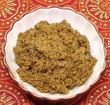

 |
Ginger-Cumin-Coriander PasteIndia - Bengal - Ada Dhone Jire Bata | ||||
| Makes: Effort: Sched: DoAhead: |
4 oz ** 10 min Yes |
Traditionally this paste is ground with a Sil and Batta, similar to the Mexican Metate y Mano (Aztec blender) - see our Mortar, Pestle & Grinding Stones page, but other methods will work. | |||
|
2 2 2 2 ar |
in T T |
Ginger Root Chili, green (1) Cumin Seeds Coriander Seeds Water |
Make: - (10 min)
|